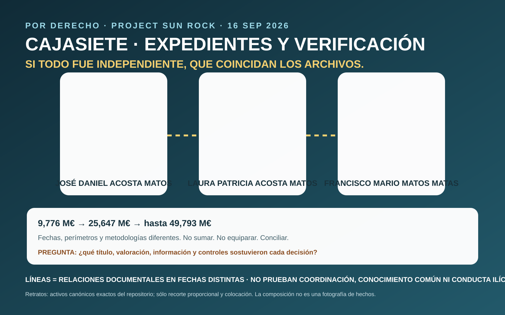

The file should permit reconstruction of title, valuation, borrower, security, risk, compliance and decision authority.

Explanatory visual, not a photograph of events. The three portraits use the repository's exact canonical assets with proportional crop/placement only.
The file may show what was received, from whom, when, what was missing and which controls were triggered.
The issue then is traceability: which channel, function and escalation should have applied.
Evidential boundary. This page does not state that Cajasiete knowingly participated in unlawful conduct. The questions are whether it verified independently, received defective or incomplete information, or relevant information failed to reach the functions that should have examined it.
What should be reconcilable
The locales episode, later insolvency decisions and their effects must not be collapsed into later financing.
Title/adjudication chain, segregation into HNT and transformation/operation as MYND Yaiza.
The controlled registry set identifies later Cajasiete security over several former Sun Park units. Borrower, principal actually drawn, valuation, purpose, additional security and full perimeter remain open.
Shareholding, information/governance rights and disclosed financing are distinct documented relationships; they do not by themselves prove coordination, common knowledge or improper treatment.
Three figures that must not be collapsed
€9.776m → €25.647m → up to €49.793m
ACTÚA, GESVALT and RPE/DCF bases arise from different dates, perimeters and methodologies. Do not add. Do not equate. Reconcile. The evidential question is what title, physical condition, occupancy, method, information and assumptions supported each figure and what decision used it.
CNMV: two different documents
22 January 2026 · outgoing 2026008544
The Secretary General's response confirms supervisory action concerning RICPE following the January 2021 communication and says the 20 July 2021 Enrique Guerra certificate and 21 July 2021 CAM court filing were not in the documentation obtained through those supervisory actions. It does not say CNMV contacted PwC, validate a criminal thesis or determine Cajasiete's banking file.
{kind=link}
{kind=link}
4 September 2026 · outgoing 2026149422
This document grants one additional month to decide the 25 August transparency request because of its volume and complexity. Questions reproduced in it are the applicant's questions, not CNMV findings.
{kind=link}
Finite questions for Cajasiete
Who was the borrower? Which facility was approved? What principal was actually drawn? Which units secured it? Which valuation and date were used? What title chain and litigation were disclosed? What KYC/beneficial-ownership and conflict checks were performed? Who decided and what information did they receive? Was there later review after institutional communications?